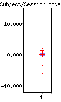

<
-
>
MELODIC Component 15
3.91 % of explained variance; 3.31 % of total variance
Temporal mode
Sessions/Subjects mode

GLM (OLS) on subject/session-mode
GLM β's
F-test on
full model fit
Contrasts
PE(1):
0.37
F = 0.74
dof1 = 1; dof2 = 39
p < 0.39368
(uncorrected for #comp.)
COPE(1):
COPE(2):
z =
z =
0.85 ;
-0.85 ;
p < 0.19684
p < 0.80316
This page produced automatically by
MELODIC
Version 3.10 - a part of
FSL - FMRIB Software Library
.